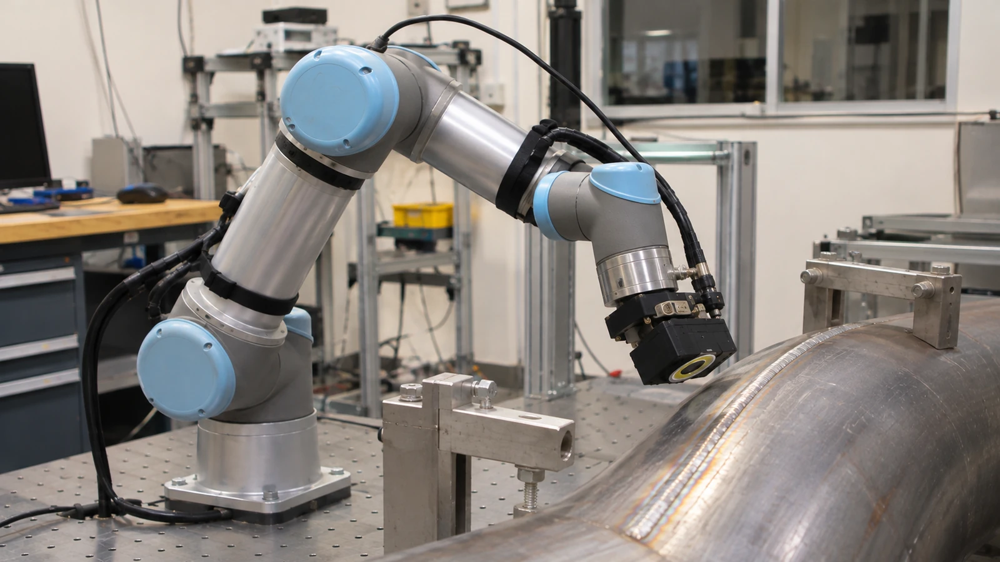
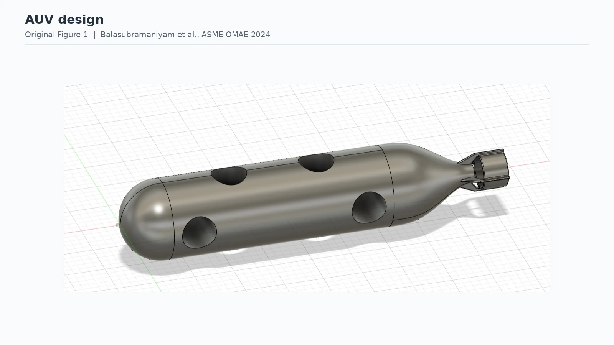

State Estimation & Factor Graphs
Factor-graph state estimation for vibration compensation in ultra-large industrial manipulators, and continuous surface feature estimation using Darboux-constrained Gaussian-process factor graphs.
Robotics • Controls • Optimization • Robot Learning
I develop reliable autonomous systems by connecting estimation, planning, control, and learning to the constraints of the task. My work spans high-precision industrial robotics and autonomous marine vehicles.
I study task-adaptive representations and optimization methods that preserve the information robots need while managing computation, uncertainty, safety, and limited onboard resources.
About
I am a Graduate Research Assistant at Carnegie Mellon University’s Biorobotics Lab (July 2024 – Present), advised by Dr. Howie Choset. My research experience also includes autonomous marine vehicles and control at IIT Madras, and robotic inspection and perception at the University of Washington.
Master of Science in Mechanical Engineering – Research, 2025 – 2027 · Pittsburgh, PA
Advisor: Dr. Howie Choset · GPA: 4.00/4.00
Bachelor of Technology in Ocean Engineering, 2021 – 2025 · Chennai, India
Gold Medal – Highest Department CGPA · CGPA: 9.26/10.00
Programming: Python, C/C++, MATLAB
Tools & Hardware: Git, Docker, Linux, Simulink, SolidWorks, Fusion 360, ANSYS, Arduino, ROS/ROS2, MuJoCo, Isaac Gym, Gazebo
Research
Factor-graph state estimation for vibration compensation in ultra-large industrial manipulators, and continuous surface feature estimation using Darboux-constrained Gaussian-process factor graphs.
Perception and factor-graph optimization for high-precision industrial welding, alongside experience evaluating robust and nonlinear control strategies for autonomous underwater vehicles.
Decentralized multi-agent reinforcement and imitation learning for quadruped/hexapod locomotion in Isaac Gym, and multi-agent deep reinforcement learning for marine pursuit-evasion games.
Selected Projects
How can a robot make dependable decisions when sensing is uncertain, computation is limited, and performance must be balanced against safety or energy?

Estimation · PlanningReliable weld inspection requires a robot to understand a continuous, curved surface from measurements that are sparse, noisy, and incomplete. This project asks how geometry and inspection objectives can be estimated together so a robot can generate an accurate path instead of merely following disconnected sensor points.
See how the geometry is reconstructed State Estimation · Control
State Estimation · Control
Industrial material deposition becomes difficult when a large robot flexes and vibrates as it moves. Even a correct planned path can miss the target, raising a practical question: can the process estimate structural motion in real time and choose when to deposit material so accuracy is preserved?
Explore the estimation and timing strategy
Guidance · ControlsAn underwater robot can track a path more aggressively by using additional control effort, but every correction consumes energy needed to finish the mission. This project examines when simpler control is actually the more reliable choice and how much tracking performance must be traded for endurance.
Compare the control strategies Reinforcement Learning · Safety
Reinforcement Learning · Safety
Safe navigation in crowded water cannot be based on distance alone: a faraway vessel approaching quickly may be more dangerous than a nearby vessel moving away. This project explores how an autonomous vessel can recognize developing threats early while still making progress toward its destination.
See how the policy reasons about riskPublications